1895년 12월 28일, 오귀스트와 루이 뤼미에르 형제가 발명한 시네마토그라프의 첫 유료 상영이 프랑스 파리 그랑 카페의 지하 살롱에서 열렸다. 사람들이 시네마토그라프가 영사하는 빛을 향해 한 방향을 바라봤던 그날에서 130년이 흐른 2026년, ‘빛’을 뜻하는 뤼미에르 형제의 이름을 딴 ‘뤼미에르 서밋(The Lumière Summit)’이 지난 9월 7일 프랑스 생폴드방스 마그재단 미술관에서 열렸다. 영화·영상 정책과 산업, 예술의 주요 인사들이 한자리에 모여 영화와 영상이 걸어온 길을 되짚고 현재와 미래를 함께 바라보는 자리였다.
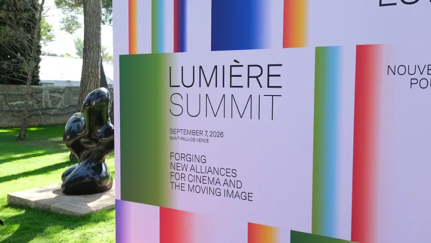
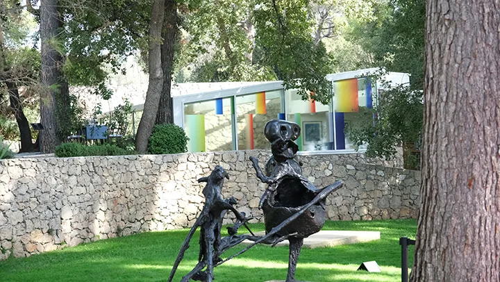
뤼미에르 서밋이 열린 마그재단 미술관 입구 정원의 모습
(제공=이준우, Fondation Maeght, Successió Miró)
뤼미에르 서밋은 영화·영상을 주제로 열린 최초의 국제 정상회의로, 외교와 정책, 산업, 창작을 한자리에서 논하는 다층적인 행사로 기획되었다. 올해 4월 에마뉘엘 마크롱 프랑스 대통령이 방한한 정상회담에서 이재명 대통령에게 뤼미에르 서밋 공동의장을 제안했고, 양국 간 합의에 따라 지난 5월 79회 칸국제영화제(이하 칸영화제) 기간 중 공식 개최가 발표되었다. 이후 양국 부처와 기관 간의 협의를 거쳐 넉 달 동안 행사가 구체화되었다. 세계 영화·영상 시장에서 꾸준히 영향력을 확대해 온 한국과 영화의 탄생·발전을 함께하며 창작의 다양성과 관객의 문화 향유를 중시해 온 프랑스가 공동의장을 맡았다는 점에서도 상징성이 컸다.
마그재단 미술관은 하루 동안 행사만을 위한 공간이 되어 참가자들을 맞이했다. 프랑스 남부의 작은 도시 생폴드방스의 청명한 아침, 정원을 가로지르는 레드카펫 끝에 태극기와 프랑스의 삼색기, EU의 유럽기가 나란히 걸려 있었고, 본관 내부에는 50여 개국의 국기가 늘어서 있었다. 한국과 프랑스 양국 정상이 참가한 이날 행사에는 전 세계 50여 국에서 온 정부·기관 관계자와 산업 종사자, 감독·배우 등 200여 명이 참석했다.
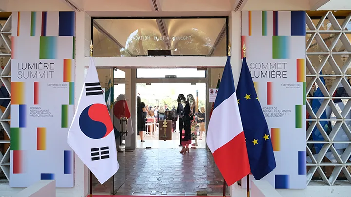
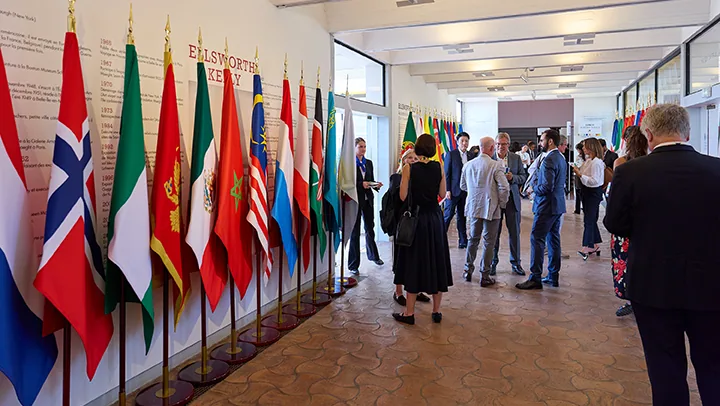
뤼미에르 서밋에 전 세계 50여 개국이 참석했다.
사진은 마그재단 미술관에 놓인 각국의 국기들
(제공=이준우, Stephane Sby Balmy(CNC))
뤼미에르 서밋은 ‘영화·영상이 지닌 가치를 어떻게 창조하고 나누며 지켜낼 것인가’라는 질문을 중심으로 구성되었다. 이날의 논의는 영화만이 아니라 시리즈, AI, 게임 등 인접 분야까지 확장되었다. 한국, 프랑스 양국 정상이 연설에 참여한 개막 세션에서는 뤼미에르 서밋의 정신과 방향성을 공유하고 영화·영상의 가치를 되돌아보기 위한 메시지가 오갔다. 이어 ‘창작의 새로운 경계’, ‘창작의 재원과 가치 배분’, ‘관객과의 관계 재정립’, ‘산업이 지켜야 할 약속’이라는 네 개의 대주제 아래 여러 콘퍼런스와 워크숍이 마그재단 미술관의 회의 공간에서 동시에 진행되었다. 폐막 세션에서는 이미지 리터러시 교육을 포함한 미래 세대를 위한 영화·영상의 과제를 논의하며 행사를 마무리했다. 개·폐막 세션을 포함해 이날 진행된 프로그램은 모두 22개에 달했다.
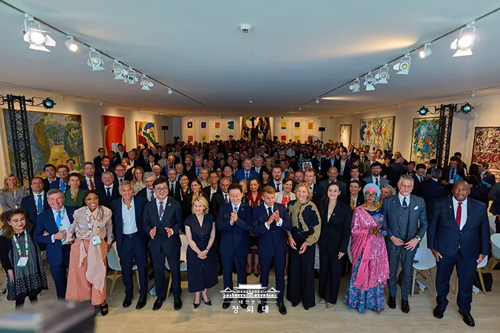
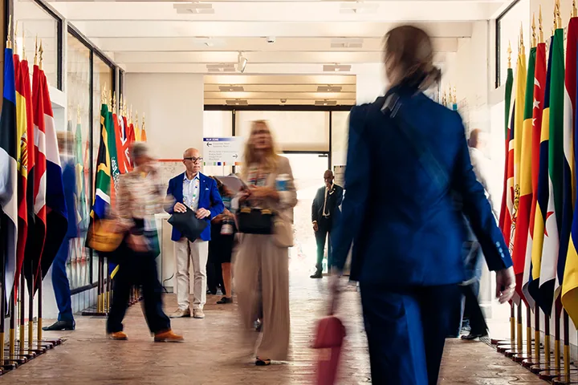
뤼미에르 서밋 공식 포토콜(왼쪽)과 행사장 모습(제공=대한민국 청와대, William Lentz(CNC))
뤼미에르 서밋 공식 포토콜(위쪽)과 행사장 모습
(제공=대한민국 청와대, William Lentz(CNC))
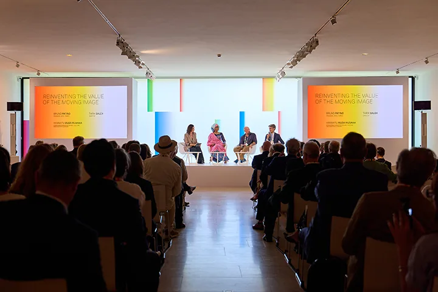
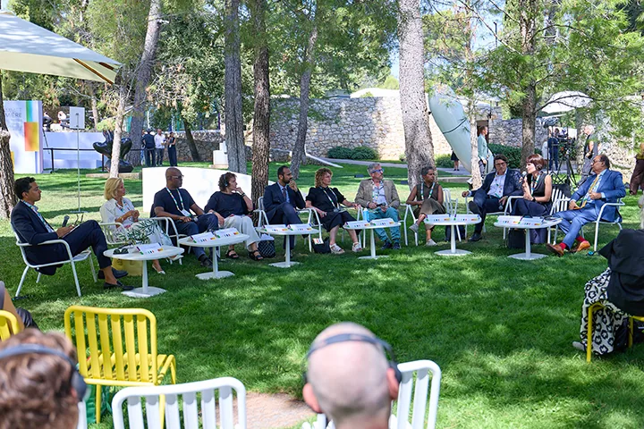
공식 세션이 진행된 내부(왼쪽)와 야외 스케치(제공=Stephane Sby Balmy(CNC), Successió Miró, ADAGP Paris 2026(CNC))
공식 세션이 진행된 내부(위쪽)와 야외 스케치(제공=Stephane Sby Balmy(CNC), Successió Miró, ADAGP Paris 2026(CNC))
창작의 새로운 경계
-
01 AI와 무빙 이미지: 규칙을 세우다(AI and Moving Images: Establishing Ground Rules)
-
02 크리에이터 이코노미: 성숙해진 재능의 생태계(The Creator Economy: The Maturity of an Ecosystem of Talent)
-
03 플레이어와 함께 만들다: 비디오게임을 둘러싼 커뮤니티(Creating with Their Players: Building a Community around Video Games)
-
04 창작의 결정권은 누구에게 있는가(Who Has the Right to Make Creative Decisions?)
-
05 저작권 침해: 시간과의 경주(Piracy: A Global Race against the Clock)
창작 재원과 가치 배분
-
01 제작 재원의 새로운 방정식(The New Financial Equations of Production)
-
02 공적 지원, 미래 가치를 만들다(Public Support, Creating Future Value)
-
03 로컬에서 글로벌로: 공유 가치 창출의 새로운 관점(From Local to Global: New Outlooks for Creating Shared Value)
-
04 방송사와 스트리밍 플랫폼: 파트너십의 시대(Broadcasters and Streaming Platforms: The Era of Partnerships)
관객과의 관계 재정립
-
01 극장 독점 공개: 가장 중요한 첫 번째 창구(Theatrical Exclusivity: An Essential First Window)
-
02 무엇을 볼지 누가 정하는가(Who Chooses What We Watch?)
-
03 규모의 전환: 세계로 나아가는 독립영화(Changing Scale: Independent Cinema Conquering the World)
-
04 배급과 개봉: 영화를 위한 새로운 합의(Distribution and Release: A New Deal in Support of Films)
-
05 비판은 쉽고 대체는 불가능하다: 영화제의 역할을 다시 묻다(Easy to Criticize, Impossible to Replace: Rethinking the Role of Festivals)
산업이 지켜야 할 약속
-
01 세계 영화유산 구하기: 지금 행동해야 한다(Saving Global Cinematographic Heritage: Action Needed Urgently)
-
02 더 안전한 현장과 더 나은 이야기: 평등이 필요한 이유(Safer Film Shoots and Better Narratives: Why Equality Is Essential)
-
03 젊은 세대는 어디에 있는가: 차세대 의사결정자에게 산업을 열다(Where Are the Young People? Opening Up the Industry to a New Generation of Decision-Makers)
-
04 창작의 자유: 보편적 권리, 불균등한 보호(Freedom of Creation: A Universal Right, Unequally Protected)
-
05 예술과 민주주의: 무엇이 우리를 잇는가(Art and Democracy: What Brings Us Together)
뤼미에르 서밋의 문을 연 개막식에서는 한국과 프랑스 양국 정상이 나란히 연설에 나섰다. 이재명 대통령은 극장의 위기, 인공지능이 가져온 위협과 기회, 독립영화와 다양성, 로컬과 글로벌의 상생이라는 네 가지 의제를 제시하며, 끊임없는 혁신과 창의성이 위기를 기회로 만드는 힘이라고 강조했다. 에마뉘엘 마크롱 대통령은 영상 콘텐츠가 창작되고 소비되는 방식이 전례 없는 규모와 속도로 변하고 있다며, 이 변화를 두려워할 이유도 없지만 이에 휩쓸려서도 안 된다고 말했다. 또한, 어떤 나라도 이 미래를 홀로 개척할 수 없으며, 이번 뤼미에르 서밋이 각국 정부와 창작자, 제작자, 방송사, 플랫폼, 극장, 기술업계, 국제기구를 한자리에 모으는 다자간 협력의 이정표가 되기를 바란다고 덧붙였다. 이날 개막 연설에서 양국 정상은 전략적 이니셔티브인 '뤼미에르 파트너십(The Lumière Partnership)'의 출범을 함께 알렸다.
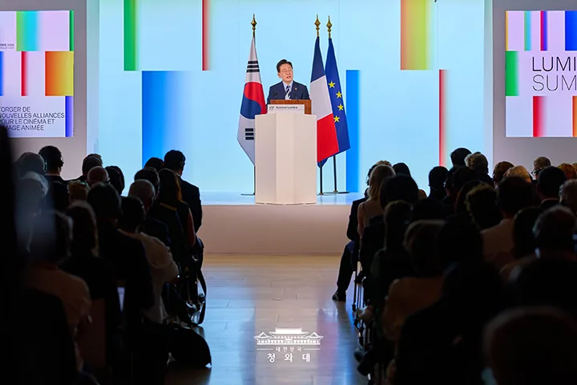
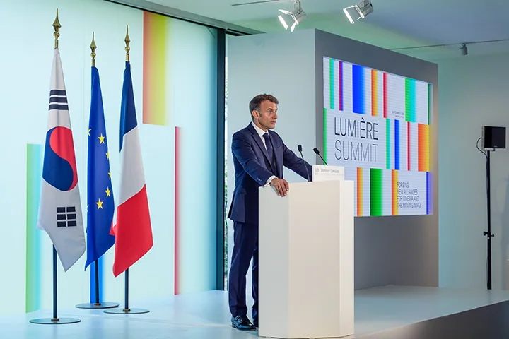
뤼미에르 서밋 개막식에서 연설을 하고 있는 이재명 대통령(왼쪽)과 마크롱 대통령(제공=대한민국 청와대, Présidence de la République)
뤼미에르 서밋 개막식에서 연설을 하고 있는 이재명 대통령(위쪽)과 마크롱 대통령(제공=대한민국 청와대, Présidence de la République)
뤼미에르 파트너십(The Lumière Partnership)
한국과 프랑스는 이번 뤼미에르 서밋을 계기로 2027년부터 2031년까지 양국에서 5년간 영화·영상산업에 각각 5억 유로(한화 약 8천억 원)의 투자를 목표로 하는 ‘글로벌 영화·영상산업 투자협력 이니셔티브(이하 뤼미에르 파트너십)’의 출범을 공식 발표했다.
총 10억 유로(한화 약 1조 6천억 원) 규모로 추진되는 뤼미에르 파트너십은 양국이 자국 영화·영상산업에 대한 정책금융 투자를 통해 산업 생태계에 활력을 불어넣고, 다른 국가가 참여하는 공동투자와 제작·유통 모델로 협력의 범위를 넓혀가는 것을 목표로 한다. 양국은 향후 뤼미에르 파트너십의 구체적인 실행 방안을 논의하기 위한 운영위원회(Steering Committee)를 구성할 계획이다. 아울러 양국은 이번 파트너십이 뤼미에르 서밋에서 채택된 ‘뤼미에르 선언(The Lumière Declaration)’의 원칙에 따라 운용되어야 한다는 데도 뜻을 함께했다.
뤼미에르 선언(The Lumière Declaration)
뤼미에르 서밋에서는 대표 선언인 뤼미에르 선언을 필두로 AI, 지식재산권 침해 대응, 지속가능성, 성평등과 안전한 제작 환경, 영화·영상교육을 주제로 하는 세부 선언 다섯 가지가 함께 채택되었다. 대표 선언과 세부 선언 다섯 건은 한국과 프랑스가 공동으로 제안한 것이다.
뤼미에르 서밋 전체를 관통하는 뤼미에르 선언은 영화와 영상의 미래를 위한 15가지 원칙으로 구성되었다. 작품 중심의 창작과 인재를 위한 투자, 작품의 다양성과 관객 접근성, 극장 상영의 가치, 국제공동제작과 국가·지역 간 협력 등이 주요 내용이다. 또한 저작권 침해에 대한 국제적 대응과 함께 AI 기술의 활용을 인정하는 가운데 인간의 창작과 지식재산권의 가치를 지켜가기 위한 노력을 영화·영상산업의 기반으로 제시했다.
이 밖에 뤼미에르 선언은 창작의 자유, 성평등과 안전한 제작 환경, 영화·영상유산의 보존, 지속 가능한 제작과 유통 등을 주요 원칙으로 제시했으며, ‘영화·영상교육’을 21세기의 보편적 소양으로 발전시키기 위한 글로벌 단위의 협력 필요성을 담았다. 이로써 뤼미에르 선언은 각국의 정부와 기관, 기업, 창작자가 함께 참여하는 ‘무빙 이미지의 다자주의(A multilateralism of the moving image)’를 궁극적인 협력 방향으로 제시했다.
아이리스와 뤼미에르 얼라이언스(IRIS and The Lumière Alliance)
뤼미에르 서밋에서는 선언과 함께 이를 실행에 옮길 여러 이니셔티브가 출범하였다. 위기에 놓인 독립·예술영화관을 국제적으로 지원하는 ‘아이리스(The International Resilience Initiative for Independent Screens, IRIS)’는 프랑스, 모로코와 함께 한국이 창립 파트너로 참여해 2027년 1월부터 본격 가동될 예정이다. 영화·영상교육을 보편적 과제로 삼기 위한 글로벌 파트너십 역시 프랑스, 나이지리아와 한국이 공동으로 주도하며 매년 세 나라의 영상교육 프로그램 구축을 지원한다. 이 밖에 소실 위기의 영화·영상 유산을 보존하는 ‘알리프(ALIPH)’ 프로그램, 35세 이하 차세대 영화·영상 인재를 발굴하는 ‘시청각 넥스트 젠(Audiovisual Next Gen)’도 새로운 출발을 알렸다. 세계 각국의 영화·영상기관을 연결하는 글로벌 네트워크, ‘뤼미에르 얼라이언스(The Lumière Alliance)’도 이날 새롭게 구성됐다.
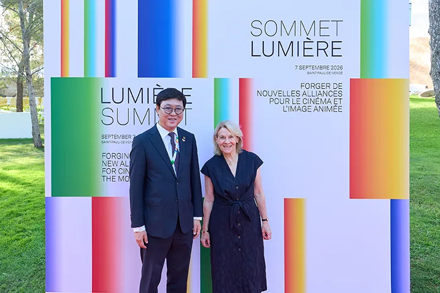
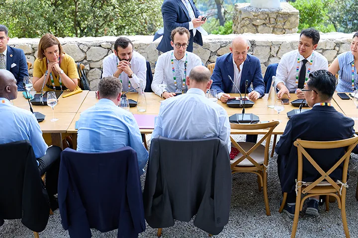
최휘영 문화체육관광부 장관과 카트린 페가르 프랑스 문화부 장관(왼쪽). 전 세계 여러 나라의 영화·영상기관을 연결하는 뤼미에르 얼라이언스
(제공=Stephane Sby Balmy(CNC))
최휘영 문화체육관광부 장관과 카트린 페가르 프랑스 문화부 장관(위쪽). 전 세계 여러 나라의 영화·영상기관을 연결하는 뤼미에르 얼라이언스
(제공=Stephane Sby Balmy(CNC))
한국, 주요 파트너 국가들과 협약
뤼미에르 서밋을 계기로 한국과 글로벌 영화·영상산업을 잇는 협력도 잇따랐다. 이날 한국은 한 건의 정부 간 협정과 세 건의 업무협약을 체결했다. 먼저 최휘영 문화체육관광부 장관과 알레산드로 줄리(Alessandro Giuli) 이탈리아 문화부 장관이 ‘한-이탈리아 영화 공동제작 협정’에 공식 서명했다. 이번 협정으로 양국 간 공동제작의 독자적인 기반이 마련되었으며, 공동제작물로 인정받은 영화는 양국에서 자국 영화로 인정되어 인센티브와 세액공제, 제작 인력과 장비 이동 간소화 등의 혜택을 받게 된다. 한상준 영화진흥위원회(이하 영진위) 위원장도 이날 함께 배석하여 이번 협정이 실제 현장으로 이어질 수 있도록 뒷받침하겠다는 뜻을 밝혔다.
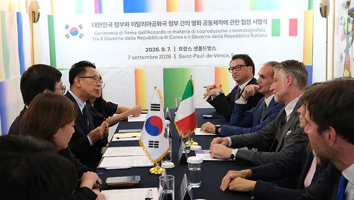
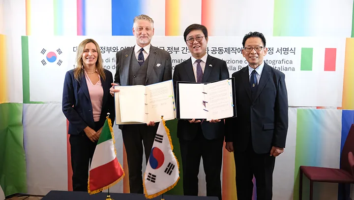
한국과 이탈리아의 독자적인 공동제작 기반을 마련한
‘한-이탈리아 영화 공동제작 협정’(제공=이준우)
영진위와 미국영화협회(Motion Pictures Association, MPA)는 업무협약을 통해 신인 발굴 및 인재 양성, 전문 인력 교류, 정보 및 지식 교류, 상영 행사를 아우르는 포괄적 협력을 약속했다. MPA는 월트디즈니와 넷플릭스, 파라마운트 스카이댄스, 아마존 MGM 스튜디오, 소니 픽쳐스, 유니버설 픽쳐스, 워너브러더스 디스커버리 등을 대변하는 비영리 단체이다.
국내 대표 영화·영상 스튜디오로 자리매김한 SLL과 프랑스를 대표하는 미디어 그룹 미디어완(Mediawan)은 양 사가 보유한 IP 포맷을 활용하여 글로벌 시장을 겨냥하는 다양한 작품의 발굴과 제작을 위한 협력에 뜻을 모았다. 네이버와 프랑스 국립시청각연구소(Institut national de l'audiovisuel, INA)는 네이버의 기술 역량 및 플랫폼 활용 능력과 INA의 방대한 아카이빙·디지털화 역량을 접목하여 AI 기반의 아카이브 보존·복원을 위한 공동 연구와 신규 콘텐츠 발굴, 전문가 교류 등을 추진하기로 합의하였다.
마지막을 장식하는 폐막 연설에서 최휘영 문화체육관광부 장관은 이번 뤼미에르 서밋이 국경을 넘어 영화와 영상이라는 하나의 언어로 깊이 소통하고 지속 가능한 미래를 위한 연대의 다리를 놓은 역사적인 자리였다고 평가했다. 카트린 페가르(Catherine Pégard) 프랑스 문화부 장관은 “각계의 주체들을 한자리에 모으는 일은 결코 당연하지 않았다”며 뤼미에르 서밋의 성공적인 개최에 대한 감회를 밝혔다. 뤼미에르 서밋에서 채택된 여러 선언은 행사로 종결되지 않고 미래 파트너의 동참에 열려 있으며, 함께 출범한 여러 이니셔티브 역시 추가 참여를 전제로 운영될 예정이다.
영화와 영상의 미래를 향한 새로운 빛을 표방했던 이번 뤼미에르 서밋은 50여 국 200여 명의 참가자들 사이에 작은 소통의 씨앗을 심어두었다. 가시적인 결과물로 남은 선언문은 다자간 협력의 대원칙과 방향을 제시했을 뿐이다. 정책과 산업을 움직이고 작품을 만들어내는 각국의 주체들이 앞으로 어떤 협력 모델을 만들어낼지, 영화와 영상의 지형도를 어떻게 바꿔 나갈지는 이 씨앗들이 어떻게 싹을 틔우는지에 달려 있다.
전세계 영화·영상을 위한 네트워크, 뤼미에르 얼라이언스
9월 7일 오후, 영진위가 주도적으로 참여한 워크숍 ‘공적 지원, 미래 가치를 만들다(Public Support, Long-Term Value)’가 마그재단 미술관 미로 정원(Labyrinthe Miró)에서 열렸다. 스페인의 화가이자 조각가인 호안 미로의 작품들이 곳곳에 배치되어 인상적인 곳이기도 하다. 휘장 아래 놓인 긴 테이블을 사이에 두고 마주 앉은 아시아와 유럽, 이베로아메리카(편집자 주- Iberoamérica, 이베리아 반도 국가인 스페인과 포르투갈의 영향으로 스페인어나 포르투갈어를 쓰게 된 아메리카 지역)의 영화·영상기관 대표들은 이날 처음으로 한자리에 모여 상설 협력체 뤼미에르 얼라이언스의 출범을 알렸다.
뤼미에르 얼라이언스는 뤼미에르 서밋에서 제시한 ‘무빙 이미지의 다자주의’를 구체적으로 실행하는 모델이며, 대륙을 막론하고 전 세계의 영화·영상기관을 연결하는 최초의 글로벌 단위 네트워크라고 할 수 있다. 영화·영상기관 간의 협력은 20여 년에 걸쳐 대륙 단위로 자리를 잡아왔다. 유럽에는 38개 기관이 참여하는 유럽영화기관장협회(European Film Agency Directors association, EFAD)가 활발하게 활동하고 있으며, 중남미에는 22개 기관 간의 이베로아메리카영화시청각협력회의(Conferencia de Autoridades Audiovisuales y Cinematográficas de Iberoamérica, CAACI)가, 아시아에는 9개 기관이 함께하는 아시아 영화 협력 네트워크(Asian Film Alliance Network, AFAN)가 기관별 경험을 공유하고 공동의 방향성을 조율하며 국가별 정책 모델을 나눠왔다. 뤼미에르 얼라이언스는 기존 네트워크를 대체하지 않고 서로 연결하여 새로운 다자간 네트워크를 형성하는 것을 원칙으로 삼는다.
뤼미에르 얼라이언스는 개방적이고 비공식적인 형태를 택했다. 회원 자격은 영화·영상의 지원과 보호, 진흥을 임무로 하는 국가기관과 공공기관에 열려 있고 회비는 없으며, 회원기관의 자발적 기여로 운영되는 느슨한 네트워크를 지향한다. 지금까지 53개 국가 및 지역에서 참여 의사를 밝혔으며 주요 활동은 네 가지 방향으로 제시되었다. 참여 기관 실무자 간의 소통 창구를 만드는 ‘교류(Exchange)’, 서로 다른 정책 모델과 성공 사례를 나누는 ‘공유(Share)’, 기관 간 공동의 시너지를 도모하는 ‘협력(Cooperate)’, 그리고 글로벌 논의의 장에서 각국 기관의 목소리를 키우기 위한 ‘신장(Advance)’이다.
???? 아메리카
6국- 멕시코
- 도미니카공화국
- 에콰도르
- 캐나다
- 퀘벡
- 콜롬비아
???? 유럽
29국- 그리스
- 네덜란드
- 노르웨이
- 덴마크
- 독일
- 라트비아
- 룩셈부르크
- 리투아니아
- 몬테네그로
- 몰도바
- 몰타
- 북마케도니아
- 불가리아
- 스웨덴
- 스위스
- 스페인
- 슬로베니아
- 아일랜드
- 알바니아
- 에스토니아
- 영국
- 오스트리아
- 왈로니-브뤼셀 연방
- 우크라이나
- 체코
- 코소보
- 크로아티아
- 폴란드
- 프랑스
???? 아프리카
6국- 나이지리아
- 마다가스카르
- 모로코
- 세네갈
- 케냐
- 코트디부아르
???? 중동
2국- 시리아
- 이라크
???? 아시아
9국- 대만
- 대한민국
- 말레이시아
- 베트남
- 싱가포르
- 인도네시아
- 일본
- 카자흐스탄
- 필리핀
???? 오세아니아
1국- 뉴질랜드
코로나19 팬데믹으로 영화 제작의 패러다임이 바뀐 이후 국제공동제작을 위한 네트워킹과 다양한 제작 파이낸싱 모델 구축에 대한 수요는 꾸준히 증가하고 있다. 2023년 출범한 AFAN은 이 흐름 속에서 아시아 내의 교류와 협력을 촉진하는 데 주요한 역할을 해왔다. 영진위는 AFAN의 출범 전후로 동남아시아를 비롯한 아시아의 영화·영상기관을 잇는 구심점 역할을 맡아왔다.
한상준 위원장은 연합체에 대한 위원회의 공식 참여 의사를 밝히며 워크숍의 서두를 열었다. 한상준 위원장은 AFAN이 참여국 간 각기 다른 역사와 영화적 전통을 존중하는 것에서 출발했음을 언급하며, 고유한 영화의 역사와 산업적 특색을 가진 국가들이 국가 간 차이를 인정하고 배우는 과정을 통해 상호 협력할 수 있음을 강조했다. 또한 산업의 변화와 동행하는 정책의 방점이 영화·영상의 다양성과 창작권의 보장이 작동하는 환경으로 향해야 한다는 의견을 밝혔다. 한상준 위원장은 이와 더불어 국경을 넘나드는 문제는 국경을 넘어선 협력으로 풀 수 있으며, 지역과 지역, 네트워크와 네트워크가 이어져야 할 시점이 도래했음을 시사했다.
이어진 개별 토론에서 참가자들은 젊은 세대가 더 다양한 작품을 접하도록 하기 위해 어떻게 지원할 것인가를 두고 의견이 오갔다. 한상준 위원장은 세 가지 조건을 들었다. 다양한 영화가 만들어져야 하고, 그 영화들이 관객과 만날 접점이 충분해야 하며, 새로운 세대에게 극장이 친숙한 문화 향유의 기회로 다가가야 한다는 점이다. 한상준 위원장은 특히 마지막 조건의 실현을 위해서는 영화·영상교육과 이미지 리터러시가 신장되어야 함을 언급하며, 청소년이 극장을 찾아 영화 전문가와 함께 작품을 보고 배우는 영진위의 ‘차세대 미래관객 육성 사업’을 사례로 소개하고, 향후 회원기관 간 교육 분야 협력의 필요성도 함께 언급하여 참가자들의 공감을 이끌어냈다.
뤼미에르 얼라이언스는 올가을 첫 온라인 회의를 열고, 2027년 5월 칸영화제에서 첫 정례 회동을, 같은 해 가을에 첫 연례 총회를 개최할 예정이다. 영진위는 뤼미에르 얼라이언스의 향후 활동에 지속적으로 참여하여 국내 영화계의 잠재적인 파트너십을 확대할 수 있는 다양한 공적 협력의 흐름을 만들어낼 계획이다. 정책 모델을 공유할 상대와 공동제작의 파트너가 반드시 일치하지는 않는 만큼, 협력의 목적에 따라 관계를 설계하는 일이 앞으로의 과제가 될 전망이다.
한국 대표단의 베스트 신(Scene)
뤼미에르 서밋의 공동의장국인 한국에서는 이번 행사를 위해 각계각층의 키 플레이어가 참여했다. 공동의장국으로서 이번 행사를 이끈 문화체육관광부(장관 최휘영)를 필두로 한국의 영화·영상 정책과 지원을 책임지고 있는 영진위(위원장 한상준)와 한국콘텐츠진흥원(원장 김윤지)이 의장국의 대표부처 및 기관으로 참석했다. 한국 콘텐츠의 글로벌 진출을 위해 다양한 행보를 펼치고 있는 CJ에서는 이미경 부회장과 CJ ENM 윤상현 대표, TVING의 최주희 대표가 함께 참석했다. 한국의 콘텐츠 제작을 주도하고 있는 제작사 SLL의 박준서 대표와 명실상부 아시아를 대표하는 글로벌 영화제로 자리매김한 부산국제영화제 박광수 이사장도 참가 명단에 이름을 올렸다. 또한 영화·영상산업의 확장을 견인하는 AI 기술과 게임산업을 대표하여 네이버 최수연 대표와 넥슨코리아 강대현 공동대표도 이번 뤼미에르 서밋을 찾았다.
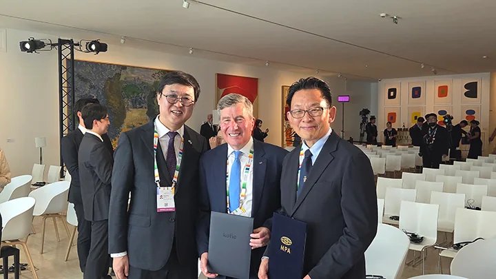
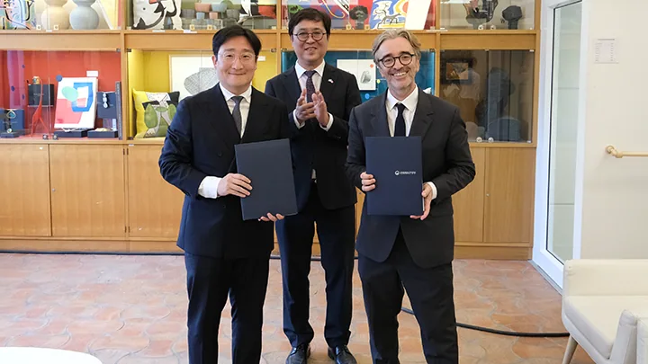
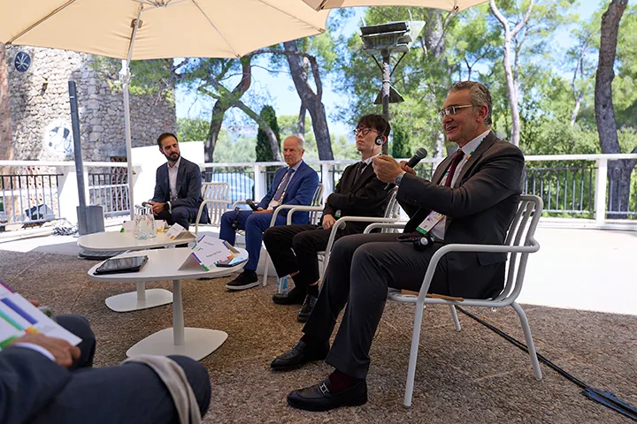
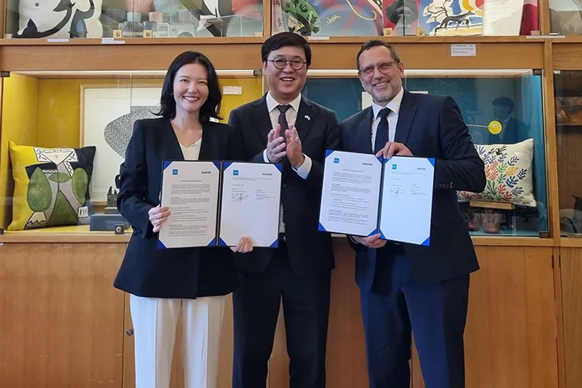
왼쪽 위부터 시계방향으로 영화진흥위원회-MPA MOU, SLL-미디어완 MOU, 세션에 참가한 넥슨코리아 강대현 공동대표(왼쪽에서 세 번째),
네이버-INA MOU(제공=이준우, 문화체육관광부, Stephane Sby Balmy(CNC))
위부터 아래방향으로 영화진흥위원회-MPA MOU, SLL-미디어완 MOU, 세션에 참가한 넥슨코리아 강대현 공동대표(왼쪽에서 세 번째),
네이버-INA MOU(제공=이준우, 문화체육관광부, Stephane Sby Balmy(CNC))
마그재단 미술관을 찾은 한국의 기업과 기관들은 미술관 내부에 마련된 미팅 공간에서 다양한 국가의 참가자들과 양자 미팅을 진행하고, 스위스의 조각가 알베르토 자코메티의 조형물이 전시된 야외 중정에서 참가자들과 자유로운 네트워킹을 진행했다.
한편, SLL과 네이버는 이번 서밋을 통해 유럽과의 새로운 파트너십을 체결했다. 먼저 SLL은 프랑스의 미디어 그룹 미디어완과 손잡으며 한국 드라마의 유럽 현지화와 공동제작으로 향하는 새로운 통로를 열었고, 네이버는 INA와 함께 한 세기 가까이 축적된 프랑스의 방송·영상 아카이브에 한국의 인공지능 기술을 접목하기 위한 노력에 착수했다.
박광수 부산국제영화제 이사장은 서밋의 세션 ‘비판은 쉽고 대체는 불가능하다: 영화제의 역할을 다시 묻다’에 참여해 칸, 베를린, 토론토, 산세바스티안, 홍해, 안시 등 세계 주요 영화제 관계자들과 함께 영화제의 독립성을 지켜나가기 위한 공동의 노력과 영화제 간 연대를 도모했다. 프랑스의 대표적인 시리즈 페스티벌인 시리즈 마니아와는 공동 프로그램 운영을 긴밀하게 협의하기도 했다.
강대현 넥슨코리아 공동대표는 세션 ‘플레이어와 함께 만들다: 비디오게임을 둘러싼 커뮤니티’에 연사로 참여했다. 자체 퍼블리싱이 보편화되는 시대에 게임산업이 영화·방송과 연계될 수 있는 지점을 묻는 세션으로, 뤼미에르 서밋이 게임을 한 축으로 삼은 이유를 보여주는 프로그램이었다.
이날 영진위는 MPA와 업무협약을 체결하며 미국 영화계와의 새로운 접점을 마련했다. 그동안 한국과 미국 영화계의 만남이 주로 개별 기업 간의 거래나 작품 단위의 협업으로 이루어져 왔다면, 이번 협약은 공적 기관과 산업 단체가 인재 양성과 인적 교류를 함께 논의할 창구를 만들었다는 것에 의미가 있다. 단기적인 성과보다는 중장기적인 관점에서 미래 협력의 청사진을 기대하게 하는 시작점이었다.
최근 화제가 되고 있는 영화 <가능한 사랑>의 이창동 감독과 전도연 배우, 설경구 배우도 이번 뤼미에르 서밋을 방문했다. 올해 신작 <도라>로 칸영화제 감독주간에 초청되며 세 작품 연속 칸과의 인연을 이어가고 있는 정주리 감독과 <도라>의 주인공 김도연 배우도 함께 자리했다. 이들은 이재명 대통령의 주재로 마그재단 미술관 부티크 룸에서 열린 ‘넥스트 씬, K-콘텐츠의 내일을 말하다’에 참석했다. 김민영 넷플릭스 아시아·태평양 콘텐츠 총괄 부사장도 동석했으며, 한국의 감독과 배우들은 국제 무대에서 활동하는 창작자로서 현장의 목소리를 전했다.
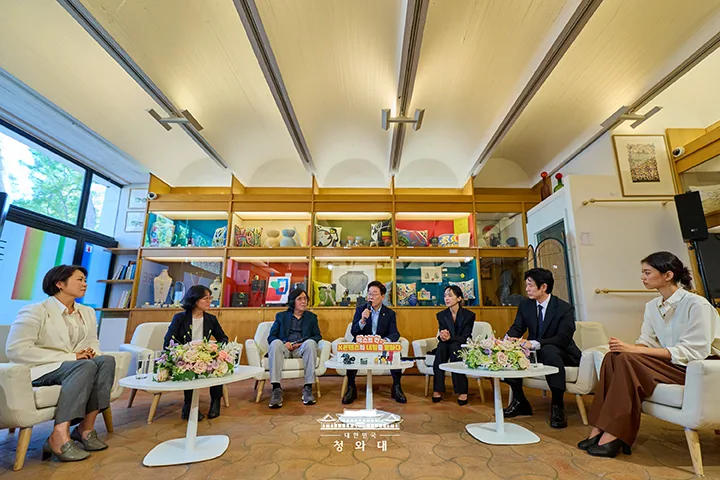
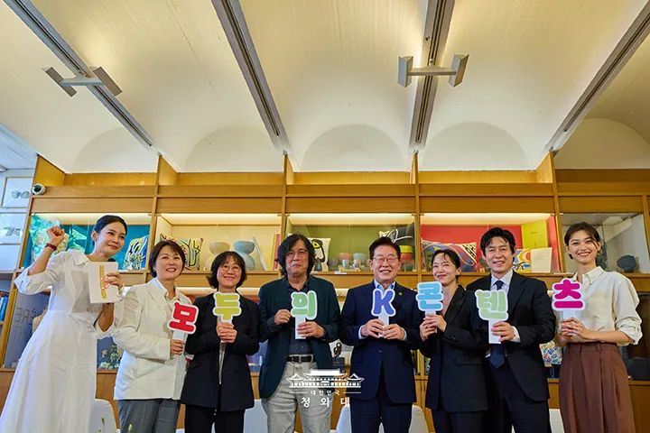
‘넥스트 씬, K-콘텐츠의 내일을 말하다’ 행사 현장. 오른쪽 사진 기준 왼쪽부터 사회를 맡은 방송인 안현모, 김민영 넷플릭스 아시아·태평양 콘텐츠 총괄 부사장, 정주리 감독, 이창동 감독, 이재명 대통령, 전도연 배우, 설경구 배우, 김도연 배우(제공=대한민국 청와대)
‘넥스트 씬, K-콘텐츠의 내일을 말하다’ 행사 현장. 아래쪽 사진 기준 왼쪽부터 사회를 맡은 방송인 안현모, 김민영 넷플릭스 아시아·태평양 콘텐츠 총괄 부사장, 정주리 감독, 이창동 감독, 이재명 대통령, 전도연 배우, 설경구 배우, 김도연 배우(제공=대한민국 청와대)
<가능한 사랑>은 뤼미에르 서밋 개최 이후인 9월 12일 83회 베니스국제영화제에서 은사자상(심사위원대상)과 국제영화비평가연맹상을 받았고, 9월 13일 51회 토론토국제영화제에서 에버트 감독상을 수상했다. 2027년 열릴 99회 아카데미 시상식 국제장편영화상 부문 한국 출품작으로 선정되기도 했다. <도라>는 프랑스와 룩셈부르크, 일본의 투자와 제작 지원이 더해진 국제공동제작 프로젝트이자, 2025년 신설된 영진위의 ‘중예산 한국영화 제작 지원 사업’ 선정작이다. 79회 칸영화제 감독주간에서 월드 프리미어를 가졌고, 오는 10월 31회 부산국제영화제 갈라 프레젠테이션으로 글로벌 관객을 만날 예정이다. 2027년 국내 개봉을 목표로 하고 있다. 두 작품의 감독과 배우들이 함께 한 이번 프로그램은 글로벌 무대에서 한국영화의 현재와 가능성을 모두 보여주는 하나의 장면(Scene)이기도 했다.
또한 한국 참가자들은 뤼미에르 서밋의 공식 세션 중 하나인 ‘국제-지역 간 공동 번영을 위한 원탁회의(New Perspective on Local and Global Co-Prosperity)’에도 참여했다. 국경과 플랫폼의 경계를 넘어 지역의 고유한 창작 생태계와 글로벌 시장이 상호 성장할 수 있는 협력 방안을 모색하는 자리였다. 역시 이재명 대통령의 주재로 CJ ENM과 네이버 등의 한국 기업과 넷플릭스, MPA, 미디어완 등 글로벌 영화·영상산업을 이끄는 기업과 단체가 연사로 참여하였으며, 공동제작과 투자, 인재 육성 등 지역 콘텐츠 생태계에 대한 재투자와 글로벌 문화 다양성 확대를 위한 구체적인 협력 방안을 논의했다.
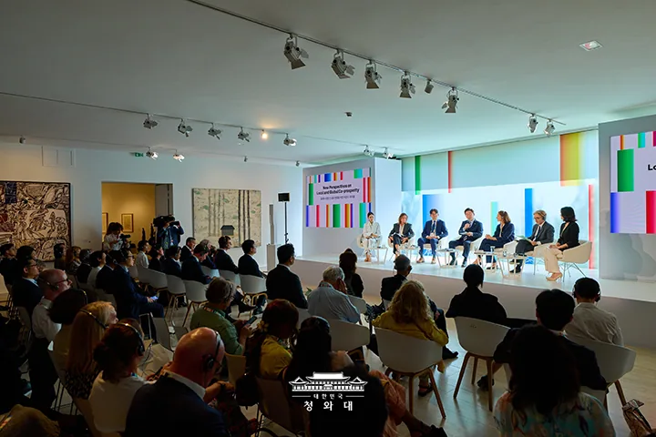
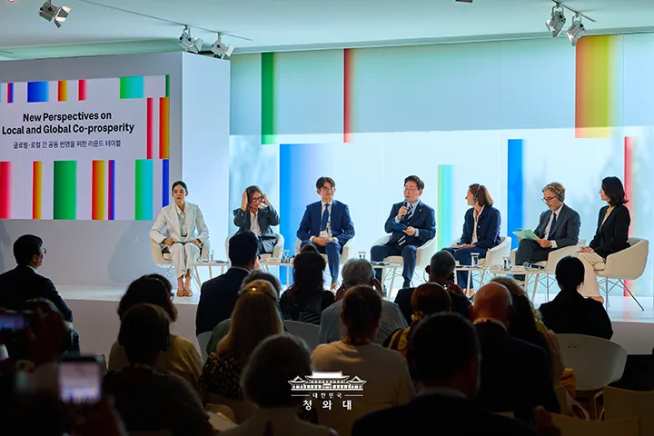
이재명 대통령이 참석한 원탁회의 현장
(제공=대한민국 청와대)